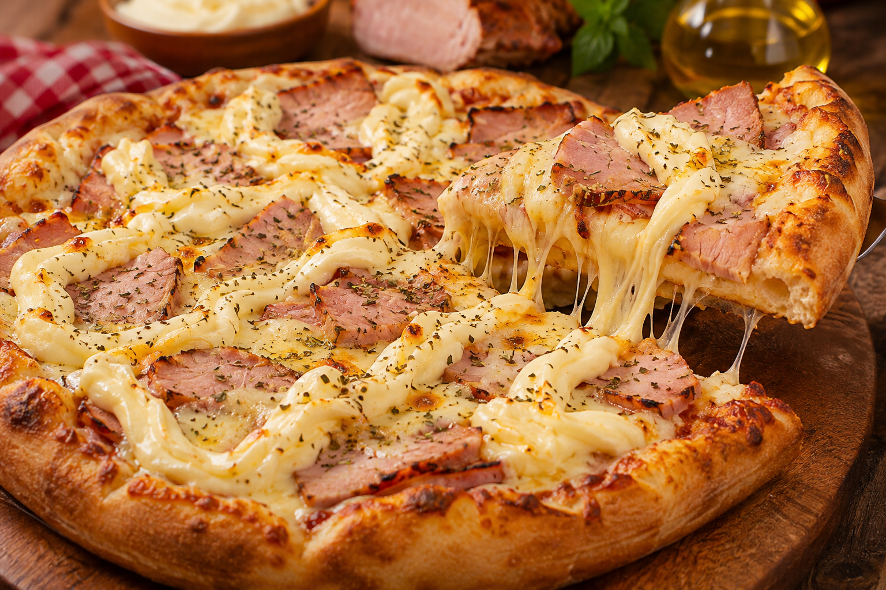

Receita de Pizza

Ingredientes
- 1 massa de pizza pronta
- 200g de molho de tomate
- 200g de queijo mussarela ralado
- 150g de lombo canadense fatiado
- 150g de requeijão cremoso tipo Catupiry
- 30g de cebola em rodelas finas (Opcional)
- Orégano a gosto
Modo de Preparo
- Pré-aqueça o forno a 200°C.
- Abra a massa de pizza em uma assadeira.
- Espalhe o molho de tomate sobre a massa.
- Distribua o queijo mussarela ralado por cima do molho.
- Adicione as fatias de lombo canadense e o requeijão cremoso.
- Se desejar, adicione as rodelas de cebola.
- Polvilhe orégano a gosto.
- Leve ao forno por aproximadamente 15-20 minutos ou até que o queijo esteja derretido e a massa dourada.
- Retire do forno, corte em fatias e sirva quente.